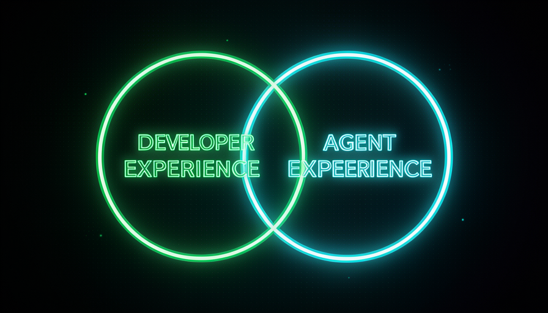

📖 Glosario vivo (lee antes — vuelve siempre que lo necesites)
Estos son los términos NUEVOS de este módulo. El vocabulario básico (modelo, prompt, agente, skill, codebase, harness) ya se definió en el módulo 1.1; aquí solo lo usamos. Fija estos términos:
🤖 Qué es Agent Experience
🧠 Imagínalo así: un empleado nuevo llega a tu empresa. Si el escritorio está organizado, hay un manual en el cajón y cada cosa tiene una etiqueta, produce desde el primer día. Si es un caos sin mapa, pasa la semana perdido. El agente es ese empleado nuevo, y el codebase es la empresa que lo recibe.
Ya conoces DX (Developer Experience): todo lo que hace que el proyecto sea agradable para un humano programar — nombres claros, scripts listos, mensajes de error legibles. Matt Pocock presenta a su hermano: AX, de Agent Experience — literalmente, "la experiencia que el agente tiene en el codebase". Es la misma pregunta, solo que hecha desde el punto de vista de la IA: cuando el agente entra en tu proyecto, ¿se orienta? ¿Entiende qué hace cada cosa? ¿Puede hacer cambios sin romper otras tres cosas?
¿Por qué esto importa y por qué ahora? Porque el agente pasó a ser un «colaborador» que trabaja en tu codebase de verdad: lee archivos, ejecuta comandos y edita código. Si el codebase es un laberinto, el agente se pierde igual que una persona, solo que "se pierde" gastando tokens, probando, equivocándose, volviendo a leer. Una buena AX no es un detalle estético: es lo que hace que el agente acierte a la primera y cueste poco. El error común aquí es tratar AX como «algo de IA, separado de mi trabajo de desarrollo»; cuando, como veremos, es casi el mismo trabajo.
El humano y el agente entran al mismo codebase y hacen las mismas preguntas. AX = esa experiencia, vista desde el lado de la IA.
⚠️ Error común de principiante
Creer que «mejorar el AX» es comprar un modelo mejor. No: AX se trata del entorno que le das al agente. Un modelo de primera en un codebase caótico igual se enreda; un modelo modesto en un codebase limpio vuela.
En 1 frase: AX es la experiencia que tiene el agente en tu codebase: trata a la IA como a un empleado nuevo que necesita orientarse.
Profundiza (opcional): ¿por qué «experiencia» y no solo «código limpio»?
"Experiencia" es más importante que "código bonito". Incluye el proceso de trabajar ahí: cuánto tardas en encontrar el archivo correcto, si el error avisa pronto o tarde, si hay un camino claro. Por eso AX (igual que DX) mide todo el recorrido del trabajo, no solo el resultado final estático.
🔵 El solapamiento DX/AX
🧠 Imagínalo así: una rampa de accesibilidad en la entrada de un edificio. Se hizo pensando en personas en silla de ruedas, pero también beneficia a quien empuja un cochecito, lleva una maleta o tiene una rodilla lesionada. No hicieron falta dos obras: una sola sirvió para todos. DX y AX son así.
Aquí está el corazón del módulo y la frase exacta de Pocock: "Huge overlap between good DX and good AX" — hay una superposición enorme entre una buena experiencia de desarrollo y una buena experiencia de agente. ¿Por qué? Porque ambas chocan con los mismos obstáculos. Un nombre de variable confuso confunde al humano e el agente. Una prueba que falla pronto protege a ambos. Una carpeta organizada permite que ambos encuentren lo que necesitan. No son dos trabajos separados: es casi el mismo trabajo rindiendo el doble.
Pocock enumera lo que mejora el resultado de la IA: mejores skills, un modelo más potente, mejor harness y mejorar el codebase, que él llama «el que más se suele olvidar». Y concluye: "un buen senior sabe construir una DX que se convierte en AX". Es decir: las habilidades que te convierten en un buen ingeniero para las personas son exactamente las que hacen que tu codebase sea bueno para los agentes. El error común es imaginar que la IA exige un conjunto de prácticas exótico y nuevo; casi siempre, basta con cuidar lo básico que ya deberías hacer. Un detalle honesto: el overlap es enorme, no al 100 % — hay ajustes solo para agentes (por ejemplo, un archivo de instrucciones que lee el agente), pero la base es compartida.

Recuperación rápida: ¿por qué cuidar el DX ya mejora el AX?
En 1 frase: hay un enorme solapamiento entre DX y AX: cuidar lo básico para las personas ya da como resultado un buen codebase para agentes.
🛡️ Guard rails y navegabilidad
🧠 Imagínalo así: una carretera en la montaña. Las barreras de protección (guard rails) no dejan que el auto caiga al abismo si se sale del camino; y los señales te dicen dónde girar. Conduces rápido y con confianza porque sabes que, si te equivocas, te avisan enseguida, no tres curvas después.
Dos palancas concretas de AX. La primera son los guard rails (barreras de protección): tipos, pruebas automatizadas, linter, validaciones. Transforman un error silencioso (que solo aparece tres pasos después) en un error ruidoso e inmediato. Pocock relaciona esto directamente con el costo: con guard rails, el modelo se equivoca menos y gasta "fewer tokens banging its head against the wall" — menos tokens golpeándose contra la pared. Sin ellos, la IA lo intenta, rompe algo en otro lugar, lo descubre tarde y vuelve a hacerlo todo — caro y lento.
La segunda palanca es la navegabilidad: el agente necesita encontrar las cosas. Carpetas con nombres que indican qué contienen, archivos en el lugar previsto, módulos con límites claros. Un codebase navegable es un mapa; uno desordenado es un laberinto. Y fíjate: las dos palancas sirven tanto a las personas como a los agentes; es el overlap del tema 2 en acción. El error común es desactivar los guard rails «para ir más rápido»: cambias una advertencia barata e inmediata por un bug costoso y tardío.
En 1 frase: los guard rails avisan del error a tiempo (menos tokens) y la navegabilidad evita que el agente se pierda: ambos sirven a las personas y a la IA.
🧭 Documentación que señala el camino
🧠 Imagínalo así: en un centro comercial enorme, lo que más te ayuda no es el folleto de 80 páginas: es el letrero «ESTÁS AQUÍ» con la flecha hacia la tienda que buscas. Para el agente, una buena documentación es la flecha, no la enciclopedia.
La documentación forma parte del AX, pero tiene que ser del tipo adecuado. No es un texto largo y genérico que nadie lee: es documentación que señala el camino. Piensa en tres cosas: (1) un archivo de entrada que diga «este proyecto hace X, empieza por aquí, ejecuta tal comando»; (2) notas que conectan las partes ("si cambias esto, revisa también aquello"); y (3) ejemplos de "cómo hacemos las cosas aquí" (el estándar del proyecto). Para el agente, esto vale oro: ahorra decenas de lecturas de prueba y error.
Y, de nuevo, el solapamiento: el mismo letrero que orienta al agente orienta a la persona nueva del equipo. La regla de oro es documentar el camino, no todo — una flecha en el lugar correcto vale más que mil páginas. El error común tiene dos caras: o cero documentos (el agente adivina y se equivoca con el estándar), o documentos demasiado (el agente — y el humano — se ahoga y el texto queda desactualizado, convirtiéndose en una trampa que apunta al lugar equivocado). El objetivo es el punto medio: pocas flechas, precisas y actualizadas.
🔬 Ejemplo resuelto: el mismo pedido en dos codebases
Tarea: "agrega un endpoint que liste los pedidos de un cliente". La misma IA, dos entornos (DX/AX):
AX malo
Carpetas con nombres vagos (utils2, final), sin tipos ni pruebas, sin documentación. → El agente lee 20 archivos para adivinar el patrón, inventa un formato distinto al resto, rompe otra ruta y solo lo descubres cuando lo ejecutas manualmente. Consume muchos tokens, es lento y, además, revisa mal.
AX bueno
Carpeta routes/ obvia, tipos en el request/response, una prueba de ejemplo al lado y un documento breve sobre "cómo creamos rutas aquí". → El agente encuentra el patrón en una lectura, copia el formato y el tipo bloquea el error de inmediato; la prueba lo confirma. Lo entrega bien desde el primer intento y a bajo costo.
En 1 frase: documenta el camino (flechas certeras), no todo; la IA y la nueva persona siguen la misma flecha.
🏗️ El codebase como entorno del agente
🧠 Imagínalo así: una cocina profesional. El chef (la IA) es excelente, pero si las encimeras están sucias, los cuchillos escondidos y los ingredientes sin etiqueta, cocina lento y comete errores. Organiza la cocina y el mismo chef triplica su rendimiento. El codebase es la cocina.
Vuelve al módulo 1.1: el harness son cuatro cosas: prompts, skills, entorno y codebase. Pocock destaca que el codebase es la pieza «que se olvida con más frecuencia» cuando se quiere mejorar el resultado de la IA. La gente afina el prompt y busca skills, pero deja desordenado el terreno. Mejorar el codebase é mejorar el entorno donde vive el agente —y, como vimos en el glosario, un entorno confuso = más tokens chocando entre sí, es decir, más costo y más errores.
Aquí está el puente al resto de la Trilha 1, en las palabras exactas de Pocock: "Have a codebase that's easier to make changes in → you can employ a stupider/cheaper model to do the same work". En otras palabras: una base de código fácil de modificar permite usar un modelo más barato para el mismo trabajo, porque los guard rails ahorran intentos. Y lo contrario: "Hamstring your model from day one → you need a smart model" — si saboteas la IA con un codebase deficiente desde el primer día, necesitarás (y pagarás) un modelo caro solo para compensarlo. Este es precisamente el tema del próximo módulo, 1.5 — Economía de tokens. El error común: tratar «refactorizar el codebase» como un lujo opcional; en realidad, es la forma más económica de reducir costos que tienes.
Para profundizar (opcional): «stupider model» no es un insulto: es una estrategia de costos
Los modelos más simples cuestan menos por token y responden más rápido. Cuando el codebase hace el trabajo pesado (avisa del error, muestra el patrón, mantiene todo en su lugar), el modelo no necesita ser brillante; solo competente. Cambias «inteligencia cara del modelo» por «buena arquitectura barata que hiciste una vez». Ese es el secreto para reducir costos en la Ruta 1.
En 1 frase: el codebase es el entorno del agente: facilitarlo permite que un modelo más barato haga el mismo trabajo.
📏 Medir una buena AX
🧠 Imagínalo así: no sabes si la cocina realmente mejoró por «intuición»: tomas el tiempo. ¿El plato sale más rápido? ¿Sale bien a la primera? Con el codebase pasa lo mismo: AX se mide por el comportamiento del agente, no por tu impresión.
Para cerrar: ¿cómo saber si tu AX es buena? No por intuición, sino por señales observables en el trabajo del agente. ¿Acertó a la primera o tuvo que rehacerlo varias veces? ¿Encontró rápido el archivo correcto o leyó medio proyecto? ¿Rompió otra cosa o los guard rails lo impidieron? ¿Gastó pocos o muchos tokens? Cada vez que vayas a «mejorar la IA», tradúcelo como «mejorar la AX» — y usa la lista de verificación de abajo para diagnosticar. Copia y pega cuando el agente se atasque en tu proyecto:
O agente patinou no projeto? Antes de trocar de modelo, cheque a AX: [ ] NAVEGABILIDADE — pastas/nomes dizem o que contêm? O caminho é óbvio? [ ] GUARD RAILS — tem tipos + testes + linter avisando o erro CEDO? [ ] DOCS QUE APONTAM — há "comece aqui", o padrão do projeto, "mude X -> veja Y"? [ ] CODEBASE LIMPO — fácil de mudar, ou um labirinto que gasta tokens? Sinais de boa AX: acerta de 1a · acha rápido · não quebra o resto · poucos tokens. Se 2+ falharam, o problema é a AX (o ambiente) — não o modelo.
Recuperación rápida: ¿cuál es la mejor señal de que tu AX está BIEN?
En 1 frase: mide la AX por el comportamiento del agente — aciertos al primer intento, rapidez para encontrar, nada roto, pocos tokens.
🧾 Resumen del módulo
Próximo módulo:
1.5 — Ahorro de tokens: por qué un codebase fácil de modificar te permite usar un modelo más barato para el mismo trabajo.